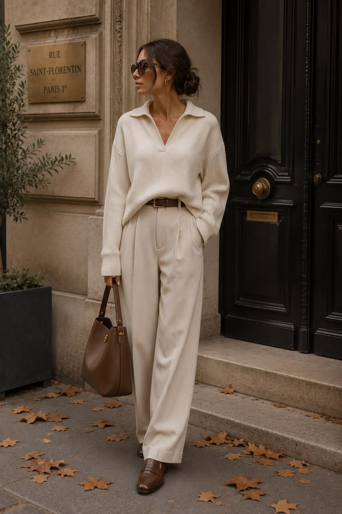
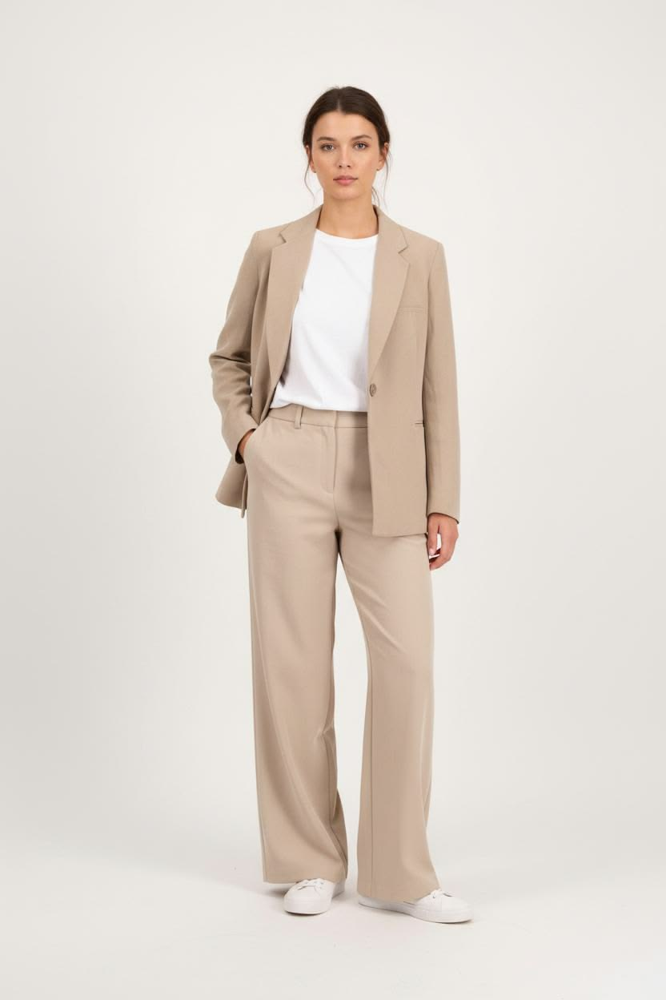
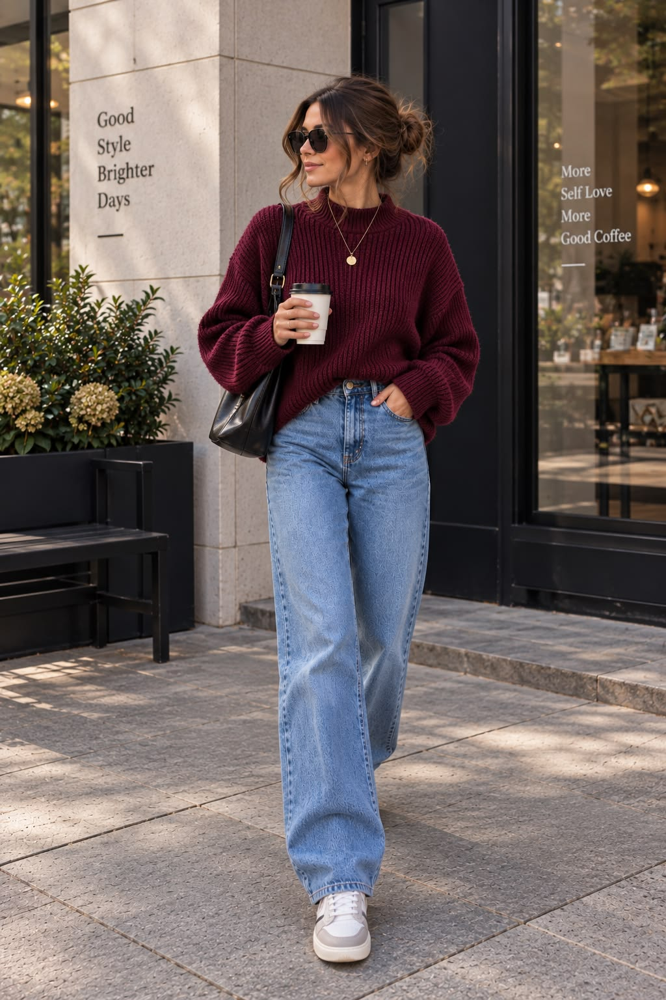
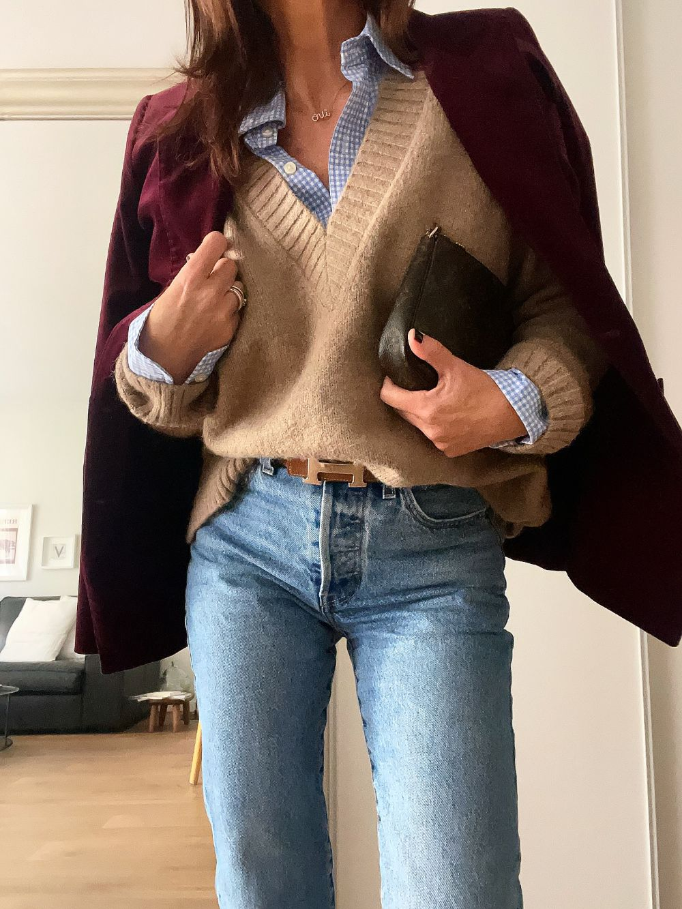
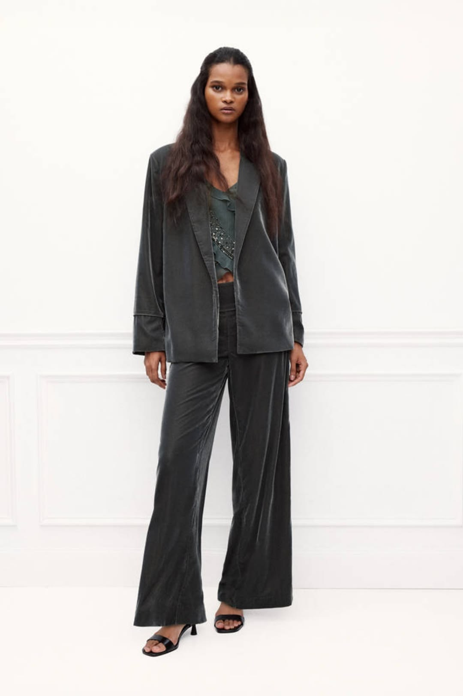
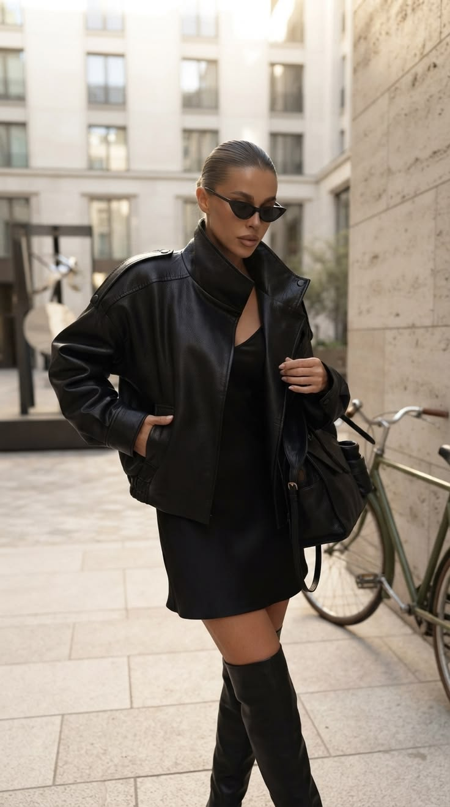

Maille et pantalon large
Pull col polo crème et pantalon large beige. Les mocassins marron et le grand sac cabas font plus sérieux.
Édition automne 2026
Comment porter, associer et superposer les pièces de la saison.
Pour une tenue chic femme au bureau, je reste dans le beige et le crème. Un pull en maille avec un pantalon large, ça suffit. Et des chaussures soignées, ça fait tout de suite plus sérieux.

Pull col polo crème et pantalon large beige. Les mocassins marron et le grand sac cabas font plus sérieux.

Blazer et pantalon assortis avec un t-shirt blanc. Avec des baskets, c'est chic et confortable.
Au quotidien, je mets surtout du denim et de la maille. Quand il fait frais, je superpose : un t-shirt, un pull, puis une veste. Si j'ai trop chaud, j'enlève une couche.

Gros pull bordeaux, jean large et baskets : une tenue facile pour un café le week-end.

Chemise à carreaux sous un pull beige à col V, et une veste en velours bordeaux sur les épaules. On voit chaque couche.
Pour une soirée, on peut oser un peu plus, avec du velours ou du cuir. Une seule pièce rouge tomate ou magenta suffit, le reste en noir ou en beige.

Veste et pantalon large en velours vert foncé, avec un top à volants. Pas besoin de beaucoup de bijoux.

Veste en cuir noir sur une robe satinée noire, avec des cuissardes et des lunettes de soleil. Tout est noir, on remarque surtout le cuir.